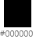
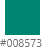

프로젝트 개요
Plan : 저는 기존에 만드는 홈페이지와 다르게 이색적인 홈페이지를 제작하기 위해서 루브르 박물관을 선정하여 개인 리뉴얼을 했습니다. 기존에 있는 홈페지는 랜딩페이지에 과한 정보로 복잡하고 눈에 들어오지 않았습니다. 메인컬러와 메인콘텐츠 메인부분의 고유의 특징들 유지하면서 변형하여 심플하면서 박물관이 가진 특유의 예술적인 부분을 살려 제작했습니다.
- 작업기간
2021 . 08 . 09 ~ 2021 . 08 . 18 - 기여도
100% - URL(깃허브)
https://skychl00712.github.io/Louvre/
- #메인컬러
  - #작업도구